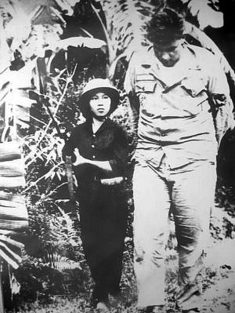
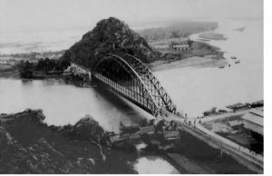
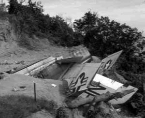
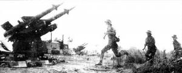
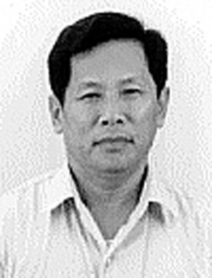

BAY TRÊN VÙNG TRỜI ĐẦY BẤT TRẮC

rước khi những toán quân Mỹ đầu tiên xuất hiện, người Việt Nam nhận ra rằng chiến thắng sẽ được quyết định qua việc Hà Nội làm thế nào để đối phó với kẻ thù có công nghệ và vũ khí vượt trội – đó là nhiệm vụ cực kỳ cam go đối với một đất nước khá hạn chế về nguồn lực. Những người Việt Nam đã tìm cách bổ khuyết cho sự thiếu thốn nguồn lực vật chất bằng óc sáng tạo tuyệt vời của họ. Họ đã thể hiện sự khéo léo đáng kinh ngạc trên chiến trường một cách thường xuyên để đối phó với những lợi thế quân sự của người Mỹ.
Dưới đất, sự khéo léo được thể hiện trong chiến lược “Bám thắt lưng địch mà đánh”. Cụm từ này có nghĩa đen là: Áp thật sát để chiến đấu, khiến cho kẻ thù không còn sử dụng lợi thế về không quân và pháo binh bởi việc dùng hai loại phương tiện kia có thể gây nguy hiểm cho chính lực lượng của kẻ thù.
Trên trời, sự khéo léo chính là việc áp dụng những chiến thuật và chiến lược đánh trận để giành thắng lợi trước một lực lượng không quân hoàn toàn áp đảo.
Trong những câu chuyện sau đây, điểm nhấn là không chiến. Điểm nhấn này sẽ làm sáng tỏ câu hỏi người Việt Nam đã sử dụng sự khéo léo của mình hiệu quả như thế nào – trong một cuộc chiến mà về mặt công nghệ người Mỹ hoàn toàn vượt trội.
BAY TRÊN VÙNG TRỜI ĐẦY BẤT TRẮC
Trong khi Mỹ luôn tìm cách duy trì ưu thế trên bầu trời Bắc Việt, Hà Nội lại quyết tâm biến không phận của mình trở nên đầy bất trắc đối với phi công Mỹ. Người Việt Nam đã thực hiện quyết tâm đó thông qua một hệ thống phòng không độc đáo và ngày càng hiệu quả.

Cuộc cách mạng phòng không bắt đầu bằng một tiền đề giản đơn: Bầu trời dù rộng lớn, nhưng nếu có đủ đạn chì để bắn vào đó, người ta sẽ thu được kết quả. Và trong câu chuyện lạ lùng được kể dưới đây, thậm chí người ta không cần bắn viên đạn nào cũng có thể làm rơi máy bay.Máy bay bắt đầu đánh phá miền Bắc vào ngày 5 tháng 8 năm 1964.
“Chúng tôi sử dụng mọi thứ để bắn vào máy bay Mỹ”, Đại tá Nguyễn Văn, một lính phòng không lúc bấy giờ mới phục vụ quân đội năm đầu, giải thích. “Chúng tôi dùng súng trường. Sau đó đến loại súng phòng không 57mm. Rồi chúng tôi được trang bị tên lửa đất đối không, và loại vũ khí mới này đã kết hợp rất hiệu quả với các hệ thống phòng không truyền thống. Có tên lửa rồi nhưng chúng tôi vẫn duy trì phương châm là tất cả mọi người – bộ đội, dân quân, bất cứ ai có thể cầm súng – cùng bắn máy bay địch. Người nước ngoài chắc rất khó hình dung được việc dùng súng trường để bắn máy bay. Trên thực tế thì chúng tôi đã làm điều đó lần đầu tiên vào năm 1947 trước người Pháp. Sau khi thu được một số kết quả, chúng tôi tiếp tục dùng súng trường bắn máy bay Mỹ”.
Hệ thống phòng không được bố trí theo từng cụm, phối hợp tác chiến trên không và trên mặt đất. Hai kiểu phối hợp này nhằm tạo ra bức tường lửa ở những nơi mà máy bay địch đi qua. Trên mặt đất, người ta bố trí ba hoặc bốn khẩu súng phối hợp với nhau. Ở trên không, các loại vũ khí khác nhau sẽ bao quát những tầm cao khác
nhau, tùy thuộc vào hiệu quả của từng loại: súng trường nhỏ như AK-47 tập trung vào độ cao dưới 300 mét; súng máy thì từ 300 tới 1.000 mét; pháo cao xạ và tên lửa đối không bao quát độ cao trên 1.000 mét.
“Việc bố trí các dàn tên lửa là tùy theo nhiệm vụ trong một khu vực nhất định”, ông Văn giải thích thêm, “nhưng thường thì, nếu tại một khu vực có quá ít dân quân, chúng tôi sẽ bố trí một đơn vị tên lửa để bù lại”.
Ông Văn nhớ lại trận đánh đầu tiên.
“Suốt cuộc đời chinh chiến, có những thứ mà người lính luôn nhớ rõ”, ông Văn nói. “Trận đánh đầu tiên là một trong những thứ đó. Nó luôn để lại ấn tượng mạnh. Trận chiến đầu tiên của tôi là vào ngày 3 tháng 4 năm 1965”.

Lúc bấy giờ, Văn chỉ huy một khẩu đội pháo cao xạ bảo vệ cầu Hàm Rồng. Cầu Hàm Rồng bắc qua sông Mã ở Thanh Hóa là một cây cầu rất khó xây dựng, đòi hỏi những kỹ thuật cầu đường đặc biệt. Cầu được khánh thành năm 1964 với một ít sự giúp đỡ của Trung Quốc.Cuộc không kích do 30 máy bay A-1 và A-4 thực hiện, với sự hỗ trợ của chiến đấu cơ F-4 và F-8 từ các tàu sân bay HANCOCK (CVA-19) và USS CORAL SEA (CVA-43). Mặc dù chiếc cầu bị phá hủy nhưng không quân Mỹ cũng bị tổn thất. Hai chiếc máy bay xuất phát từ tàu HANCOCK bị bắn rơi: một chiếc A-1H và một chiếc A-4C.
“Trong suốt cuộc chiến, chúng tôi luôn bám sát trận địa pháo”, ông Văn kể tiếp. “Chúng tôi không bao giờ đi xa hơn mười lăm mét. Chúng tôi ăn tại chỗ; có giá sách ở ngay trận địa pháo để đọc. Chúng tôi luôn ở đó để đảm bảo sẵn sàng nghênh địch.
Gần cầu có một nhà máy điện, xưởng xay xát và một nhà máy phân hóa học. Có nhà máy ở đấy tức là có dân thường ở đấy. Vì có dân thường nên nhiều người cho rằng quân Mỹ sẽ không tấn công. Nhưng chúng tôi lại được chỉ thị rằng những cơ sở này nằm trong danh sách mục tiêu của Mỹ. Trong thời gian gần đấy, địch đã tấn công một khu vực tương tự ở Quảng Bình nên chúng tôi luôn giữ tinh thần sẵn sàng.
Và rồi cuộc không kích diễn ra. Đó không phải là một trận đánh duy nhất; cuộc chiến kéo dài suốt hai ngày, mùng 3 và 4 tháng 4. Tất cả mọi người đều nhằm thẳng máy bay địch mà bắn khi chúng ập tới thả bom. Một phần xưởng xay xát và nhà máy điện bị phá hủy. Bởi đây là trận chiến đầu tiên của đời tôi nên tôi có phần bối rối trước các hoạt động của khẩu đội. Nhưng cảm giác đó sớm biến mất khi giao tranh trở nên dữ dội hơn.
Có tới 43 máy bay Mỹ bị bắn rơi trong vòng hai ngày. Tôi không biết khẩu đội của mình bắn rơi bao nhiêu chiếc bởi tất cả mọi người đều nhằm bắn vào máy bay”. (Rõ ràng tài liệu Mỹ không ghi nhận 43 máy bay rơi trong sự kiện này. Luôn luôn có sự khác nhau giữa con số máy bay mà phía Hà Nội tuyên bố đã bắn rơi và con số người Mỹ báo cáo. Các tổn thất về máy bay không phải luôn luôn được Washington thừa nhận ngay tức thì bởi trong một số trường hợp, nỗ lực tìm kiếm phi công vẫn còn đang tiếp diễn. Chỉ đến khi tất cả các phi công có máy bay bị bắn rơi được tìm thấy hoặc được xác định là mất tích [MIA] thì con số máy bay tổn thất mới chính thức được Washington thừa nhận. Tới tận hôm nay, người Mỹ và người Việt Nam vẫn còn bất đồng với nhau về các con số.
Nếu con số mà người Mỹ công bố là chính xác thì cũng có thể có một cách giải thích hợp lý đối với các tuyên bố của Hà Nội. Có thể các cán bộ tuyên truyền hăng hái đã thổi phồng số liệu máy bay bị bắn rơi chứ không phải là thành quả thực sự của những dàn súng phòng không. Nhưng cũng có thể đa số máy bay bị bắn cháy được báo cáo là xuất phát từ những lý do chính đáng hơn. Bên phía Hà Nội, họ thực sự không thể nào thống kê chính xác được số máy bay địch rơi trong mỗi sự kiện. Với thực tế là có rất nhiều người cùng nhằm bắn vào một máy bay, khi chiếc máy bay đó bị bắn rơi, ai cũng khẳng định mình đã bắn trúng.

Nếu mười khẩu đội pháo cùng bắn rơi một máy bay, con số báo cáo sau đó có thể là mười chiếc rơi. Nếu một chiếc máy bay trúng đạn vỡ tung trên trời và các mảnh vỡ phân tán trong một khu vực rộng lớn thì mỗi một địa điểm mảnh vỡ rơi trên mặt đất được phát hiện sau đó có thể được báo cáo tương ứng với một máy bay rơi. Vì thế, cái được cho là nhiều máy bay rơi đôi khi chỉ là những địa điểm rơi của các mảnh vỡ từ một chiếc máy bay duy nhất. [Ngay cả ban lãnh đạo Đảng Cộng sản cũng đôi khi nghi ngờ về tính chính xác của các báo cáo. Khi tướng Giáp báo cáo trước ban lãnh đạo Đảng về chiếc B-52 đầu tiên bị bắn rơi trên bầu trời Hà Nội, ông đã được đề nghị đích thân tới hiện trường để xác minh]).Việc triển khai các trận địa pháo hay tên lửa nhằm đối phó một mục tiêu cụ thể nào đó được quyết định tùy theo tình hình mỗi ngày.
“Chúng tôi không bao giờ coi tên lửa quan trọng hơn hay kém hơn súng phòng không”, ông Văn nói. “Số lượng các tên lửa SA-2 còn lại không bao giờ ảnh hưởng tới quyết định của chúng tôi về việc có sử dụng loại vũ khí này hay không. Ngay cả khi chỉ còn một quả, nhưng nếu chiến thuật hôm đó đòi hỏi, chúng tôi cũng phải triển khai. Tuy nhiên, thông thường thì trước mỗi chiến dịch, chúng tôi đều dự tính cần có bao nhiêu tên lửa để sau đó lên kế hoạch phù hợp”.
Trong cuộc chiến mang hình hài một ván cờ di động và chống di động, hệ thống phòng không không là ngoại lệ.
Cuộc cờ đó đa phát triển lên một tầm cao mới vào ngày 24 tháng 7 năm 1965, khi Bắc Việt bắt đầu triển khai tên lửa đất đối không SA-2 vào hệ thống phòng không. Các phi công Mỹ đã hoàn toàn bị bất ngờ.
Ông Văn giải thích: “Đây là lần đầu tiên chúng tôi sử dụng SA-2 và loại vũ khí này đã đem về thành công lớn. Các phi công Mỹ rất kinh ngạc. Lúc bấy giờ chúng tôi bắn một phi đội F-4 ở cách Hà Nội chừng 60 cây số về phía Tây. Ba chiếc rơi. Chúng tôi lập tức loan tin về thành công này trên đài phát thanh. Ngày 24 tháng 7 đã được chọn làm ngày truyền thống của lực lượng phòng không là để nhớ tới sự kiện này”.
Sau cuộc tấn công ngày 24 tháng 7 năm 1965, vào ngày hôm sau còn có một cuộc không kích nữa.
“Người Mỹ ném bom ngay đúng vị trí hôm trước để trả thù vụ tập kích tên lửa”, ông Văn nói. “Nhưng lần này chúng tôi không dùng tên lửa mà chỉ dùng súng cao xạ. Quyết định chỉ dùng súng được đưa ra sau khi chúng tôi nhận định rằng máy bay Mỹ sẽ trở lại và bay ở độ cao thấp – quá thấp nên tên lửa không phát huy tác dụng. Chúng tôi đã bắn cháy năm máy bay. Sau cuộc không kích đó, chúng tôi biết người Mỹ sẽ tiếp tục truy tìm các căn cứ tên lửa. Vì thế, chúng tôi đã làm những trận địa tên lửa giả toàn bằng tre. Chúng tôi thậm chí còn triển khai quân gần đấy để đánh lừa họ”.
Sự bối rối của người Mỹ trước các trận địa tên lửa giả vài năm sau đã được tướng William W. Maimer, Phó Tư lệnh Bộ Chỉ huy Viện trợ Quân sự của Mỹ tại Việt Nam về không quân (MACV), thừa nhận:
“Số lượng các căn cứ tên lửa đất đối không (SAM) khá ổn định trong suốt một thời gian dài, khoảng 175 hay 200 căn cứ. Tôi chưa bao giờ nghĩ rằng con số này là một mối đe dọa thực sự bởi có thể nhiều căn cứ được xây dựng hôm nay nhưng hôm sau lại bỏ trống. Dù chúng tôi đã tăng cường do thám nhưng cũng rất khó để biết được có bao nhiêu căn cứ hoạt động thực sự”.

Tên lửa SA-2 được chuyển đến Hà Nội nhiều tháng trước khi được triển khai thực sự vào tháng 7 dưới sự hỗ trợ của các chuyên gia và kỹ thuật viên Liên Xô. Giới chuyên gia Xô viết nhận định người Việt Nam cần được đào tạo ít nhất một năm để có thể vận hành tốt loại tên lửa này. Tuy nhiên, nhóm người Việt Nam đầu tiên được Liên Xô đào tạo đã trở nên thành thạo rất nhanh. Những người này sau đó trở thành lực lượng hướng dẫn chuyên nghiệp cho các thế hệ vận hành tên lửa tương lai.“Phía Liên Xô bảo rằng chúng tôi cần một năm huấn luyện”, ông Văn kể. “Nhưng khi khóa đào tạo mới bắt đầu, chúng tôi sớm nhận ra rằng vận hành loại tên lửa này không quá khó. Mọi người dự tính chỉ cần bốn tháng để hoàn thiện các kỹ năng. Rốt cuộc chúng tôi chỉ mất có ba tháng”.
Phía Liên Xô chỉ dạy người Việt Nam cách thức vận hành các dàn tên lửa chứ họ không trực tiếp tham gia chiến đấu.
“Chuyên gia Liên Xô có mặt trong những lúc xảy ra chiến sự, nhưng họ luôn đứng cách xa trận địa tên lửa”, ông Văn chỉ rõ. “Họ giúp chúng tôi khắc phục bất cứ lỗi kỹ thuật nào xảy ra trong lúc chiến đấu nhưng không nhất thiết họ phải có mặt tại trận địa. Chúng tôi được họ giúp đỡ rất nhiều”.
Sự xuất hiện của tên lửa SA-2 trong cuộc chiến đã khiến các phi công Mỹ đối mặt với nhiều hiểm nguy hơn. Một ước lượng trong thời kỳ đầu cho hay tỷ lệ chính xác của SA-2 là cứ 100 quả tên lửa được bắn đi thì có 61 máy bay rơi. (Tỷ lệ này một lần nữa lại không khớp với báo cáo của người Mỹ).
Ông Văn kể về quá trình tuyển chọn kỹ thuật viên vận hành tên lửa SA-2: “Mỗi khi cần lập thêm một nhóm học viên vận hành tên lửa, chúng tôi lại chọn các chiến sĩ từ nhiều đơn vị - vận tải, pháo binh, v.v. Họ được tuyển dụng từ nhiều chuyên ngành khác nhau”. Điều này xuất phát từ niềm tin rằng mỗi người lính là một bộ phận của đội ngũ phòng không, bất kể người đó thuộc ngành nào, và họ cần được trang bị thêm kiến thức về chiến thuật không chiến của Mỹ.
Việc bắt kịp năng lực và chiến thuật không quân của Mỹ là một thách thức thực sự cho những người làm công tác huấn luyện bên phía Việt Nam. “Người Mỹ có rất nhiều loại máy bay và vận dụng nhiều chiến thuật khác nhau”, ông Văn giải thích. “Họ liên tục thay đổi chiến thuật để khiến chúng tôi bối rối, vì thế chúng tôi cũng phải điều chỉnh cách đánh. Đôi khi chúng tôi điều chỉnh tầm cao; lúc khác lại điều chỉnh cách đánh chặn. Dù người Mỹ thay đổi như thế nào đi chăng nữa thì chúng tôi cũng có thể điều chỉnh cách đánh phù hợp. Trong vài trường hợp, người Mỹ không thay đổi gì bởi chiến thuật đang áp dụng đã khá hiệu quả. Chẳng hạn, chúng tôi đã từng bắn vào máy bay SR-71 nhưng chưa bao giờ thành công”. (SR-71 là một loại máy bay do thám của Mỹ đã phát huy hiệu quả cao trong hàng chục năm hoạt động. Tầm bay của nó rất cao, các loại tên lửa trong kho vũ khí của Hà Nội không thể với tới được).
Trong ván cờ phòng không mà hai bên đã chơi, rất nhiều phương pháp và đối pháp đã được đưa vào áp dụng để giành lợi thế.
Một đối pháp được áp dụng đó là đánh vào rađa hỗ trợ tên lửa SA-2. Sau khi quả tên lửa SA-2 được phóng đi, rađa mặt đất sẽ quyết định đường bay của nó. Rađa này phát ra xung điều khiển có tác dụng “lái” tên lửa tới mục tiêu. Cách thức này giúp tên lửa có độ chính xác cao nhưng đồng thời cũng tạo ra kẽ hở. Do dàn rađa mặt đất phải phát sóng để dẫn đường cho tên lửa nên phi công Mỹ đã triển khai một đối pháp hiệu quả. Thiết bị điện tử đặc biệt gắn trên máy bay cho phép phi công phát hiện được các xung điều khiển ngay khi nó vừa được phát ra từ mặt đất, từ đó có thể dò tìm đến dàn rađa. Có thể vào thời điểm máy bay dò ra nơi đặt rađa thì tên lửa đất đối không đã được bắn đi, nhưng nếu phi công thành công trong việc phá hủy rađa trước khi tên lửa bay tới mục tiêu thì cũng có thể khiến quả SA-2 vừa được phóng ra ấy “bị mù” – biến một quả tên lửa đang được điều khiển thành một viên đạn không được điều khiển. Do rađa và dàn tên lửa SA-2 thường được đặt chung một chỗ, phi công có thể phá hủy cả hai cùng lúc. Trong hoàn cảnh ấy, người đi săn – tức dàn tên lửa – đã trở thành kẻ bị săn tìm.
Sau khi bị mất nhiều dàn SA-2, người Việt Nam bắt đầu nhận diện được chiến thuật mà phía Mỹ đang áp dụng. Từ đó, họ đã đưa ra đối pháp của mình để triệt phá chiến thuật của Mỹ.
Với việc người Mỹ lợi dụng các xung điều khiển của rađa đối phương đê phát hiện mục tiêu, phía Việt Nam thấy rằng muốn chống lại đối pháp đó thì họ phải triệt tiêu lợi thế của kẻ thù. Nhưng nếu không sử dụng xung điều khiển, tên lửa phòng không sẽ bị mù. Làm thế nào để các xung điều khiển không bị người Mỹ lợi dụng mà vẫn có thể dẫn đường tên lửa SA-2 tới mục tiêu?
Và người ta đã đi đến quyết định rằng, thay vì cho rađa phóng xung điều khiển đồng thời với việc phóng tên lửa, vốn có thể giúp phi công có thời gian tối đa để định vị và tấn công căn cứ rađa, những người vận hành có thể phóng tên lửa trước mà không phát xung điều khiển – tức là phóng tên lửa theo hình thức phi điều khiển. Sau khi quả SA-2 đạt được một độ cao nhất định nào đó thì người vận hành mới bật rađa, cho phát ra xung điều khiển, qua đó biến một quả đạn “mù” thành một tên lửa có điều khiển. Thường thì chỉ đến chặng cuối hành trình của tên lửa, người vận hành mới bắt đầu phát xung điều khiển dẫn nó tới mục tiêu. Cách thức này không giúp dẫn đường tên lửa trong chặng đầu nhưng nó lại điều khiển ở giai đoạn quan trọng nhất – khi tên lửa tiếp cận mục tiêu. Bằng cách ấy, nó khiến phi công Mỹ không có đủ thời gian để định vị nơi phát ra xung điều khiển để từ đó tiêu diệt mục tiêu.
Người Việt Nam còn triển khai nhiều phương pháp khác.
“Rất nhiều lần người Mỹ tìm cách gây nhiễu hệ thống rađa tên lửa của chúng tôi”, ông Văn cho biết. “Khi họ làm vậy, chúng tôi quyết định không sử dụng rađa SA-2 nữa mà dùng loại khác, chẳng hạn rađa dùng cho súng phòng không. Chúng tôi biết rằng người Mỹ không có khả năng gây nhiễu đồng thời tất cả các loại rađa khác nhau. Việc phát triển các chiến thuật để đối phó với sự vượt trội về công nghệ của họ là một nhiệm vụ thường trực. Rốt cuộc, ngay cả Liên Xô cũng phải học những chiến thuật này của chúng tôi. Về mặt công nghệ, người Liên Xô là thầy của chúng tôi; nhưng về mặt thủ thuật, chúng tôi là thầy của họ”.
°°°
Người Việt Nam biết rõ rằng nỗ lực phòng không của họ có thể thu được thành công nhờ vào việc nắm bắt chiến thuật của phi công Mỹ.
“Người Mỹ thường xuyên sử dụng một chiến thuật đặc biệt”, ông Văn kể. “Máy bay của họ cất cánh từ tàu sân bay, sau đó bay dọc bờ biển, tìm đến một cửa sông lớn rồi theo dòng sông xâm nhập vào đất liền, khi bay trên mặt nước họ thường hạ độ cao tới mức thấp nhất. Thế là chúng tôi bố trí các đơn vị phòng không trong một cự ly đủ gần để có thể bắn thẳng vào vùng máy bay bay trên mặt sông. Đơn vị phòng không của chúng tôi đóng bên cạnh khu dân cư địa phương, thường là nằm cả hai bên bờ sông. Người dân địa phương cũng dùng súng trường để bắn máy bay. Trong vòng một năm, một trung đội phòng không đã bắn rơi hai máy bay”.

Ngay cả dân thường cũng tìm hiểu chiến thuật không quân của Mỹ. Đại tá Lê Thành Chơn, một sĩ quan không quân Bắc Việt phụ trách dẫn đường và nghiên cứu chiến thuật của quân Mỹ, kể lại: “Chúng tôi áp dụng rất nhiều phương pháp để chống người Mỹ. Có khi chúng tôi lập một điểm phòng không trên cầu hoặc trên mái nhà. Đến lúc người Mỹ sử dụng nhiều máy bay F-111, người dân đã quan sát chiến thuật và hành trình của loại máy bay này. Khi có tin báo máy bay đang đến, họ chốt tại các gò đất cao ngay bên dưới đường bay để bắn. Phương cách này đã thu được kết quả với việc người dân dùng vũ khí nhỏ bắn hạ được một chiếc F-111”.Một người đặc biệt am tường hệ thống phòng không của Hà Nội là Đại tướng Võ Nguyên Giáp. “Chúng tôi chiến đấu phòng không với quyết tâm, trí thông minh và tính sáng tạo cao”, Đại tướng giải thích. Những phẩm chất này, theo ông, được thể hiện rõ nhất trong nỗ lực bắn hạ máy bay B-52 vốn bay rất cao.
“Làm sao để bắn B-52”, ông phân tích. “Vẫn là nhờ vào quyết tâm, trí thông minh và sáng tạo… Đó thực sự là thách thức lớn. Loại máy bay này có thiết bị gây nhiễu sóng, làm giảm khả năng chiến đấu của chúng tôi. Nhưng chúng tôi đã thích ứng với điều đó. Đôi khi phải mất mười một quả tên lửa mới bắn được một chiếc máy bay; nhưng lúc khác chúng tôi thành công với chỉ hai quả tên lửa. Đó chính là lòng can đảm và trí thông minh – trí thông minh xuất phát từ cấp chỉ huy cao nhất cũng như những đơn vị ở chiến trường – và thậm chí đôi khi nó xuất phát từ một người. Chúng tôi khẳng định rằng đây là cuộc chiến toàn dân”.
Việc B-52 ném bom Hà Nội đã khiến nhiều dân thường phải sơ tán. Người con trai của ông Giáp nằm trong số đó. Vị đại tướng đã chia sẻ câu chuyện về việc người con trai của mình, sau khi được sơ tán khỏi thành phố để đảm bảo an toàn, đã bắt gặp một chiếc B-52 rơi. Lục lọi trong đống xác máy bay, người con trai tướng Giáp tìm thấy một số vật dụng và sau đó mang về cho cha ở Hà Nội.
“Con trai tôi mang về hai bộ tài liệu”, ông Giáp nói. “Một tập rất dày, của Bộ Quốc phòng, trên bìa có dòng chữ in ‘Lưu hành nội bộ, không được đưa ra khỏi Bộ Quốc phòng’. Khi nhận được tài liệu này, tôi liền viết thêm ở bên dưới: ‘Ngoại trừ Bộ Quốc phòng Việt Nam’. Tài liệu thứ hai rất dài và trong đó có các mệnh lệnh của Bộ Chỉ huy Không quân. Mệnh lệnh chỉ đạo đánh phá các cơ sở phòng không, cả thật lẫn giả, cùng nhiều mục tiêu khác ở trong và xung quanh Hà Nội. Phi công được lệnh rút lui an toàn sau khi hoàn tất nhiệm vụ. Nhưng tôi đã thêm vào rằng các phi công không thể rút lui an toàn – thay vào đó họ phải tới Hà Nội Hilton”.
Vị đại tướng kể một câu chuyện để chứng minh cho trường hợp “chỉ một người” cũng có thể hạ máy bay.
“Khi mới bắt đầu bắn phá miền Bắc, Không quân Mỹ sử dụng chiến thuật bay thấp. Ban đầu chúng tôi gặp khó khăn. Có lần tôi đã tới gần vĩ tuyến 17 để gặp những người bắn rơi máy bay bằng súng trường hoặc súng máy. Trong nhóm đó có một nữ sinh mười tám tuổi. Cô ấy kể ngày nào cũng quan sát máy bay và cô đã nhận ra rằng những chiếc máy bay khi tới một điểm giữa hai ngọn núi liền hạ tới một độ cao nào đó. Cô liền chọn một điểm thích hợp và đợi khi máy bay hạ xuống độ cao đó thì nổ súng bắn rơi. Cô ấy bảo rằng đó là một quy luật đơn giản. Tôi nói rằng cô ấy là một nhà triết học thực thụ - vì nhà triết học luôn biết các quy luật. Sau đó tôi đã kể câu chuyện ấy với Chủ tịch Hồ Chí Minh”.
Đại tá Chơn cũng kể lại một trong những trường hợp làm rơi máy bay Mỹ đáng kinh ngạc nhất trong cuộc chiến – sự kiện mà người ta chẳng cần bắn một viên đạn nào cả.
“Chúng tôi triển khai chiến thuật sử dụng khí cầu cho hệ thống phòng không”, ông Chơn cho hay. Những chiếc khí cầu này có đường kính từ hai tới bốn mét, được làm bằng cao su và bơm loại khí nhẹ hơn không khí. Chúng tôi thả hàng ngàn khí cầu tại một số điểm nhất định, ở độ cao khác nhau, từ 180 đến 200 mét, với dây nối xuống đất để giữ ổn định.
Địa điểm được chọn để triển khai khí cầu là những nơi được dự đoán nằm trong không trình hoạt động của phi công Mỹ, hoặc nơi mà người Việt Nam muốn dụ đối phương tới.
Trong trường hợp sau, khí cầu được sử dụng ban ngày. Chúng được sắp xếp để buộc phi công Mỹ khi sử dụng chiến thuật tiếp cận thấp phải bay theo một lối khác so với dự định. Khi tiến vào khu vực này, phi công sẽ gặp quá nhiều khí cầu nên không thể bắn rơi hết được. Vì thế anh ta buộc phải lượn máy bay lên một hành lang duy nhất không có khí cầu – là một lối đi mà những người dưới mặt đất đã tính toán kỹ. Hành lang bay này sẽ dẫn phi công tới đúng khu vực nơi pháo cao xạ và tên lửa phòng không đang đợi sẵn.
Người ta còn thả khí cầu ở những nơi phi công Mỹ thường sử dụng chiến thuật tiếp cận thấp đối với một số mục tiêu cụ thể. Ở những nơi này, nhiều khí cầu được thả lên trời để ngăn đường tiếp cận của phi công. Người ta thả khí cầu vào ban đêm với mục đích tạo ra một khu vực nguy hiểm ngay trong đường bay của những chiếc máy bay tốc độ cao. Một khi máy bay tới quá gần, quả khí cầu có thể bị cuốn vào trong động cơ phản lực, khiến máy bay rơi. Theo ông Chơn, chiến thuật này đã thành công ít nhất một lần vào năm 1967, trên bầu trời thị trấn Phủ Lý ở tỉnh Hà Nam, nằm về phía Nam Hà Nội trên vùng đồng bằng sông Hồng.
“Chúng tôi bố trí khí cầu để tạo ra một vùng bao phủ khá dài”, ông Chơn mô tả. “Ban đêm chúng tôi thả khí cầu lên và đến sáng thì kéo xuống. Quả khí cầu cao nhất nằm ở độ cao khoảng 200 mét, thấp nhất là 50 mét. Cự ly giữa các quả cầu không quá 50 mét. Đêm nọ, có một chiếc A-6 của Mỹ bay vào vùng trời này và một quả khí cầu bị cuốn vào động cơ. Máy bay rơi. Chiến thuật này chỉ thành công một lần bởi sau đó các phi công đã tìm cách tiếp cận ở tầm cao hơn”.
Ông Chơn nói rằng chiếc máy bay đó bay quá thấp nên phi công không kịp nhảy ra.
“Chúng tôi sử dụng tất cả các chiến thuật khả dĩ để chống Mỹ”, ông Chơn giải thích. “Trong trường hợp này, do chúng tôi lặp đi lặp lại một chiến thuật nên người Mỹ đã biết đường tránh”.
Khi tiến hành nghiên cứu, ban đầu người ta đã định đặt thuốc nổ vào khí cầu. Tuy nhiên, phương pháp này đã không được áp dụng.
Chiến thuật sử dụng khí cầu rốt cuộc đã bị bỏ, xuất phát từ một quyết định ngoài mong đợi.
“Một anh lính phụ trách việc thả khí cầu vào ban đêm và kéo xuống vào buổi sáng rốt cuộc đã nản”, ông Chơn giải thích. “Anh ta cảm thấy rằng tất cả những việc mình làm chẳng đem lại kết quả gì nhiều. Cho đến cuối năm 1967, đơn vị của anh ta đã góp phần bảo vệ nhà máy điện Yên Phụ bằng cách thả bóng ngăn những chiếc A-4 bay thấp, mang bom từ Hàng không mẫu hạm vào đánh nhà máy điện duy nhất của Hà Nội”. Rốt cuộc nhà máy điện cũng bị trúng bom. Nhưng ông Chơn khẳng định nhà máy điện chỉ mất điện có 6 giờ và nó vẫn bảo đảm điện cho Thủ đô suốt cuộc chiến tranh.
Ông Văn rất tự hào về việc đất nước ông, dù thiếu công nghệ, vẫn đạt được thành công trong nỗ lực phòng không trước một siêu cường thế giới.
“Người Việt Nam từng có một lịch sử chiến tranh rất lâu dài”, ông diễn giải. “Vì thế, chúng tôi có nhiều kinh nghiệm. Chiến đấu hàng chục năm chống người Nhật Bản và người Pháp, rồi sau đó là người Mỹ nên đối với chúng tôi đó như là một lẽ thường. Người ngoài cuộc sẽ khó mà hiểu được làm sao chúng tôi có thể hoàn thành những sứ mệnh ấy”.